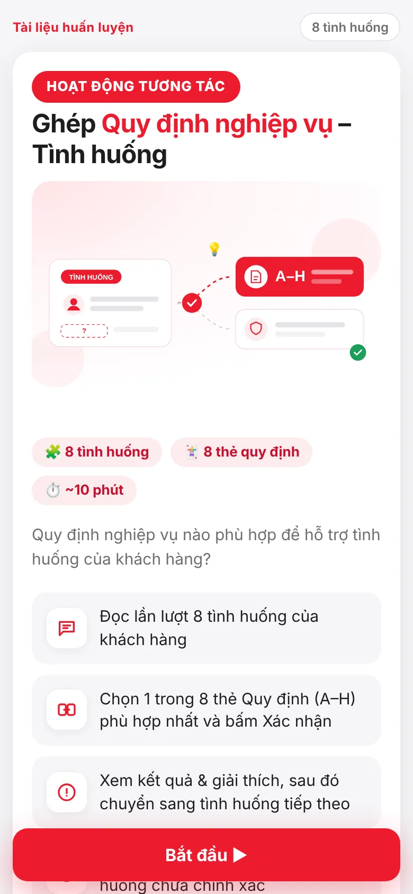
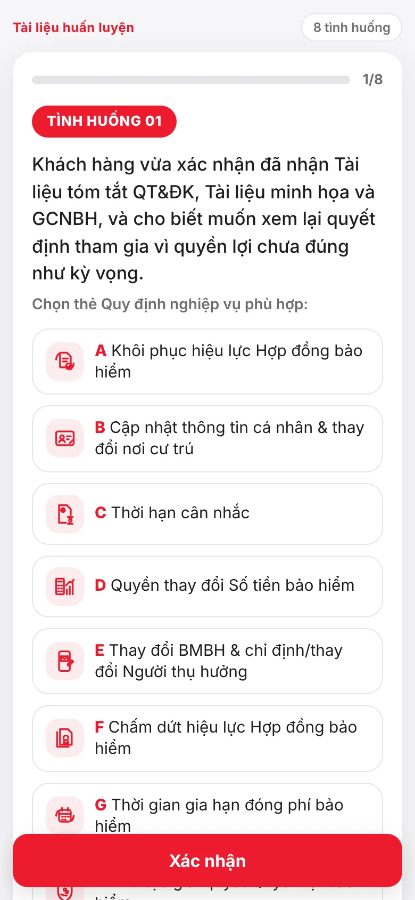
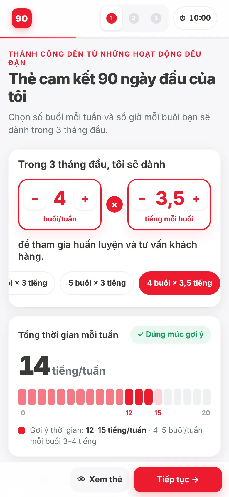
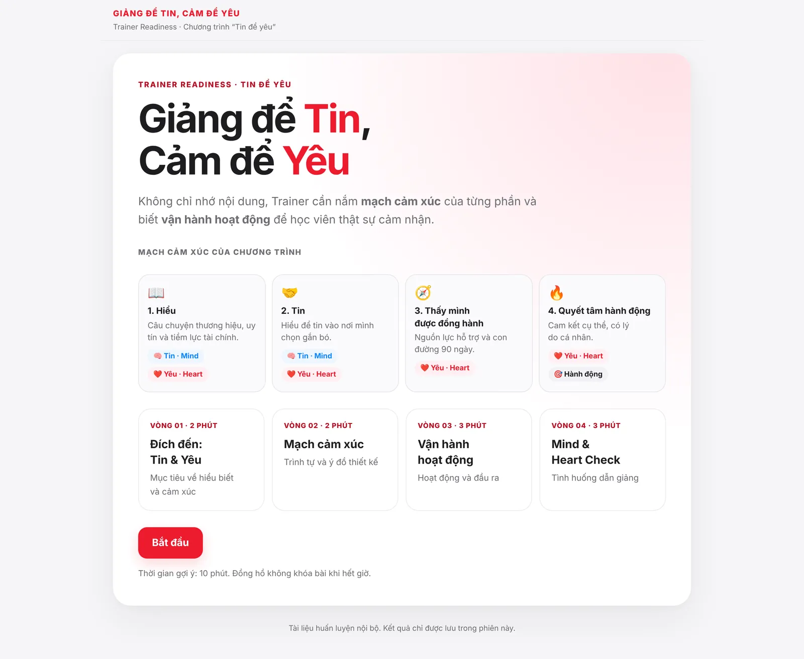
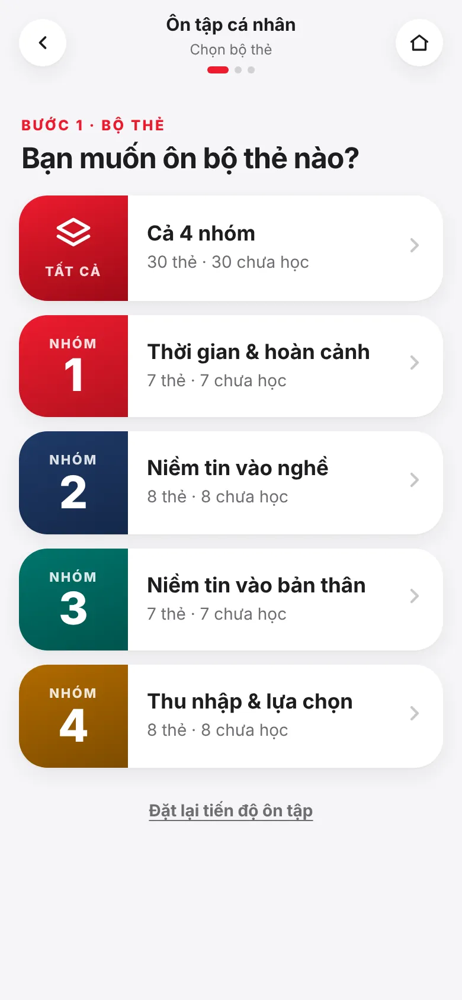

I design training people practise, not just attend.
I am an instructional designer with 10+ years in life-insurance learning and development. I build mobile learning tools that advisors, managers and trainers use in the classroom and take back to the field, and I use AI to build them in days instead of months.
Four tools from real programs
Each one solves a specific performance problem in agency training. Each case walks through the tool screen by screen and explains the design decisions behind it.


Policy Match
A situation-to-rule matching game that teaches new advisors which policy provision answers a customer's real question.
Read the case →
90-Day Commitment Card
A three-step digital commitment card that turns the emotional close of an onboarding day into a specific weekly plan shared with a line manager.
Read the case →
Trainer Readiness Check
A four-round self-check that makes sure every trainer delivering an onboarding session understands its design intent, not just its slides.
Read the case →
Candidate Concerns Coach
A 30-card practice deck for recruiting managers, with spaced-repetition self-study and a two-phone pair-practice mode with observer scoring.
Read the case →How I use AI to design training
The four-step process behind these tools, the written standards that keep AI output consistent, and the checks I never hand to a machine.
How I work
Behaviour first
I start from what a person must do differently in the field, then choose the activity. Content is the last decision, not the first.
Feedback is the lesson
Every tool explains why an answer is right, gives wording learners can use, and lets them retry only what they missed.
Evidence for the manager
Tools end with something to share: a plan, a score, a commitment. That gives line managers a reason to coach after class.
Let's talk about your learning programs
I am open to conversations about training design, train-the-trainer programs and AI-assisted learning development.